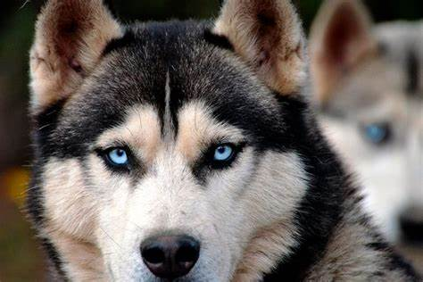

A kutya vagy eb (Canis lupus familiaris) ujjon járó emlős ragadozó állat, a szürke farkas (Canis lupus) egy már kihalt alfajának háziasított formája. Az egyetlen olyan emlős állatfaj, amely tudományos nevében megkapta a familiaris, azaz a családhoz tartozó jelzőt. A kutyákat szokás a társállatok sorában emlegetni. Ezenkívül tágabb értelemben kutyának neveznek a kutyafélék (Canidae) családján belül a valódi kutyaformák (Canini) nemzetségéhez tartozó több más fajt is: ilyenek például a kisfülű kutya (Atelocynus microtis), az ázsiai vadkutya (Cuon alpinus), a nyestkutya (Nyctereutes procyonoides), az afrikai vadkutya vagy hiénakutya (Lycaon pictus) és az őserdei kutya (Speothos venaticus). A háziasított kutyát mindezektől a házikutya elnevezéssel különböztetik meg. Szócikkünkben „kutya” alatt a házikutya értendő. A kutyák munkatársként vagy munkaeszközként (például: őrkutyák, vadászkutyák, szánhúzókutyák, vakvezetőkutyák), terápiás állatként, házi kedvencként egyaránt szolgálják az embereket. Kelet-Ázsiában (vagy éhínség idején a világ többi részén is) emberi táplálék is lehet belőlük, ilyen célra tenyésztett fajta például a csau csau.[1][2]
